Desenvolvimento animal, ilustrado por A. Dermale em 1885. I. Taenia, II. Mariposa e III. Sapo.
Diante da imensa diversidade de organismos que compõem o reino Animalia, algumas características possibilitam diferenciá-los em grupos menores, os chamados “filos”. Por muito tempo, o desenvolvimento embrionário e a forma
de organização corpórea desses organismos foram utilizados como critério para a classificação, o que possibilitou a elaboração de uma árvore filogenética que evidenciava graus de parentesco e ancestralidade com base nesses
fundamentos. Esta é ainda a maneira mais comum de apresentação sequencial dos animais e será a que abordaremos neste livro. Atualmente, análises comparativas de biologia molecular têm sido a principal ferramenta utilizada
pelos cientistas com a finalidade de obter informações sobre o desenvolvimento de cada um desses organismos. No entanto, esse método tem revelado parentescos e relações entre os animais bem diferentes das propostas que
eram anteriormente aceitas, alterando a visão sobre a história evolutiva dos animais.
Quais filos compõem o reino Animalia? Exemplifique-os
Quais aspectos do desenvolvimento embrionário diferenciam os animais?
Quais formas de organização corpórea possibilitam diferenciar os animais?
Neste capítulo serão abordadas as habilidades
EM13CNT202
e
EM13CNT208
.
Reino Animalia ou Metazoa
Acredita-se que os primeiros animais tenham surgido há cerca de 700 milhões de anos na Era Pré-Cambriana. A diversidade desses seres foi revelada por registros fósseis do início do período Cambriano, especialmente na chamada “explosão
do Cambriano” – momento de significativo aumento da diversidade de organismos em um intervalo de tempo bastante curto do ponto de vista geológico, cerca de 300 milhões de anos. A construção de uma árvore filogenética dos
animais geralmente exige estudos comparativos entre a morfologia e a fisiologia de estruturas corporais, sendo a análise do desenvolvimento embrionário também capaz de evidenciar o parentesco entre os filos. Os fósseis, por
sua vez, apesar de serem registros de extrema importância, acabam deixando lacunas, já que muitos dos organismos não foram fossilizados
Ancestralidade dos Metazoa
Apesar de quase não haver mais dúvidas quanto à existência de um ancestral protista comum a todos os animais, ainda não se sabe a qual grupo protista esse ancestral pertenceu. Em 1874, o biólogo, naturalista e médico Ernst Haeckel
(1834-1919) propôs a teoria colonial para explicar a evolução dos metazoários, a qual é ainda hoje a mais aceita. Segundo Haeckel, um protista flagelado teria dado origem a um ancestral metazoário, que seria inicialmente uma
esfera oca; tempos depois, desenvolveu a capacidade de locomoção e especializações celulares. Atualmente, evidências científicas apontam para o filo de protistas Choanoflagellata como o grupo irmão dos metazoários. Conforme
veremos no capítulo seguinte, os seres incluídos no filo Porifera – animais de organização simples, sem a presença de tecido –, representados pelas esponjas, são dotados de células muito semelhantes às encontradas nos coanoflagelados.
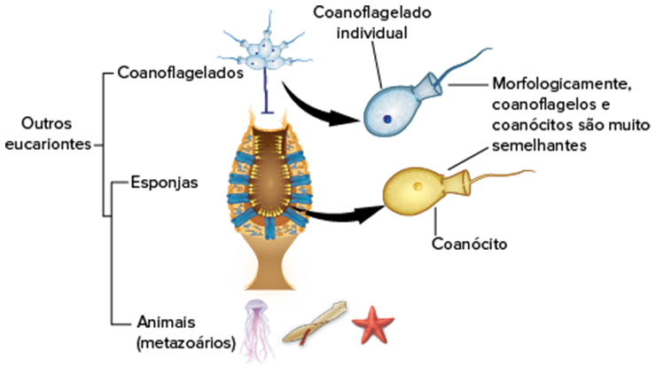
Representação esquemática da árvore filogenética que sinaliza a ancestralidade protista dos metazoários
Como o reino Animalia é um grupo monofilético, seus membros compartilham inúmeras sinapomorfias, tais como a estrutura de gametas, o evento de gastrulação e o desenvolvimento de folhetos embrionários, que serão
detalhados no decorrer deste capítulo. Assim, o estudo das fases do desenvolvimento embrionário pode ser utilizado para classificar os diferentes grupos incluidos em Metazoa
Monofilético: organismos que formam um clado, isto é, descendem de um ancestral comum. Sinapomorfia: característica compartilhada por determinado grupo de organismos.
Desenvolvimento embrionário
A partir do encontro dos gametas feminino e masculino provenientes de indivíduos pertencentes à mesma espécie em um evento conhecido como fecundação ou fertilização, um zigoto será gerado e passará pelos estágios de desenvolvimento
embrionário antes de se tornar um novo organismo.
Fases do desenvolvimento embrionário
Clivagem ou segmentação
Uma vez formado o zigoto, essa célula passará por sucessivas divisões mitóticas, conhecidas como “clivagens”, e dará origem a novas células denominadas blastômeros
O embrião, ao passar por clivagens e alterações nas disposições dos blastômeros, modifica-se em blástula. Esse processo é chamado blastulação.
Gastrulação
A fase de segmentação leva à formação de uma esfera oca de células, o que determina o estágio de blástula. Em continuação às divisões mitóticas, o embrião entra na etapa de gastrulação. A estrutura definida como gástrula é
caracterizada por duas camadas de células ou folhetos embrionários conhecidos como ectoderme (externa) e endoderme (interna). Esse segundo folheto recobre o arquêntero, a nova cavidade formada que permite o contato com o meio
externo por meio de uma abertura denominada blastóporo.
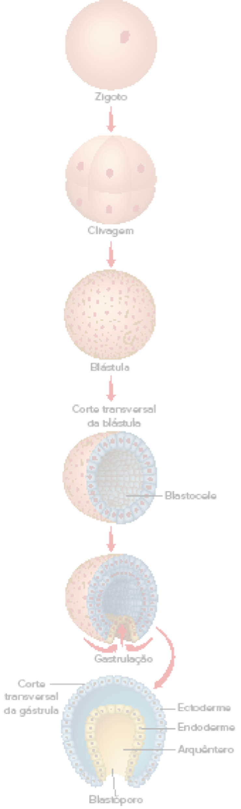
REECE, J. B. et al. Biologia de Campbell. 10. ed. Porto Alegre: Artmed, 2015. Representação esquemática das fases de segmentação, blastulação e gastrulação durante o desenvolvimento embrionário de um animal.
O arquêntero, representado na ilustração ao lado, é também considerado o intestino primitivo, já que posteriormente constituirá parte da cavidade digestória. No reino Animalia, a fase de gastrulação é uma característica
compartilhada pela maioria dos grupos, exceto o filo Porifera. Nesse grupo, as larvas, originadas durante o processo reprodutivo, desenvolvem-se até a blástula e, posteriormente, originam os organismos adultos. Pela
ausência da gástrula, os poríferos não apresentam cavidade digestória, o que os difere dos demais filos. Por essa razão, os animais podem ser divididos em dois grandes grupos: os parazoários (poríferos) e os eumetazoários
(demais filos). Nos grupos de animais em que o blastóporo é formado, este poderá dar origem à boca ou ao ânus. Essa característica embriológica possibilita classificar os animais quanto à estrutura formada. Quando
o blastóporo origina a boca, os animais são classificados como protostômios (do grego protos e stoma, que significam, respectivamente, “primeiro” e “boca”), representados pelos cnidários, platelmintos, nematódeos, anelídeos,
moluscos e artrópodes. Quando esse orifício origina o ânus, os animais são classificados como deuterostômios (do grego deuteros e stoma, que significam, respectivamente, “segundo” e “boca”), e os principais representantes
são os equinodermos e os cordados. Ainda na fase de gastrulação, a continuidade dos movimentos das camadas de células, principalmente da endoderme, origina, em alguns animais, um terceiro folheto embrionário que
irá se dispor entre os outros dois (ectoderme e endoderme); por isso, ele é chamado mesoderme, a partir do qual se forma, por exemplo, a notocorda presente no filo dos cordados.
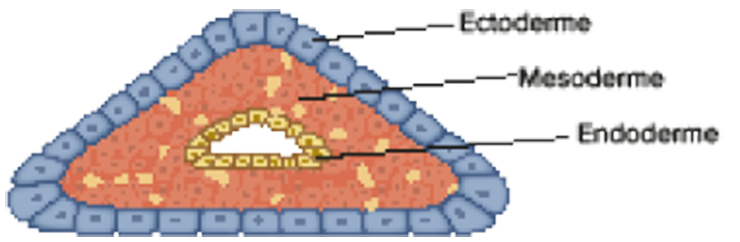
REECE, J. B. et al. Biologia de Campbell. 10. ed. Porto Alegre: Artmed, 2015. Representação esquemática do corte transversal de um animal, evidenciando a posição dos três folhetos embrionários.
Classificação de acordo com a presença dos tipos de folhetos embrionários
A formação dos folhetos embrionários, também conhecidos como folhetos germinativos, possibilitou classificar os animais quanto ao número de camadas de células presentes. Quando há apenas dois folhetos – a ectoderme e a endoderme
–, como é o caso dos cnidários, esses animais são classificados como diploblásticos ou diblásticos. Já aqueles dotados de mesoderme, o terceiro folheto embrionário, são classificados como triploblásticos ou triblásticos
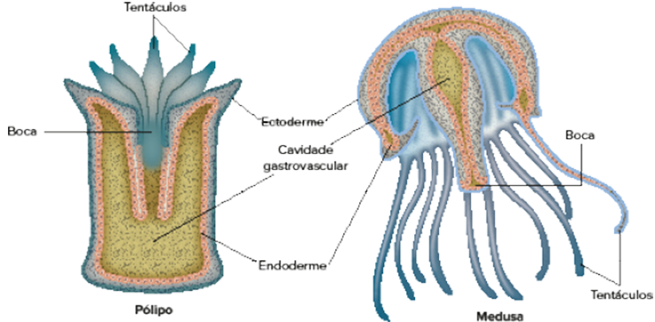
REECE, J. B. et al. Biologia de Campbell. 10. ed. Porto Alegre: Artmed, 2015. Representação esquemática da condição diblástica dos cnidários, representados pelos pólipos e medusas.
Neurulação
Com o início da formação da notocorda durante a fase avançada da gastrulação, algumas células da ectoderme diferenciam-se e dão origem à placa neural, que, ao longo do desenvolvimento embrionário, fecha-se por completo e forma
o tubo neural. Essa fase é conhecida como neurulação
Organogênese
Ainda durante o estágio de neurulação, inicia-se a organogênese, isto é, a formação de tecidos, órgãos e sistemas do animal. Esse processo ocorre a partir da diferenciação e especialização das células derivadas dos três folhetos
embrionários.
A partir da ectoderme, por exemplo, surgem as células da epiderme, além das estruturas do sistema nervoso. A mesoderme origina uma grande variedade de células, entre as quais estão as células musculares e as hemácias.
A endoderme, por sua vez, origina as células intestinais, as células do pulmão e as células da tireoide, por exemplo. A imagem abaixo indica os tipos celulares derivados de cada um dos folhetos embrionários.
Anexos embrionários
Por meio dos folhetos embrionários também se originam os anexos embrionários. Embora essas estruturas tenham a mesma origem do embrião, não fazem parte de seu corpo.
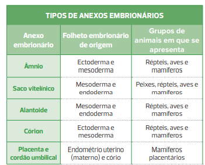
Relação de anexos embrionários, suas respectivas origens embrionárias e os grupos de animais nos quais se encontram.
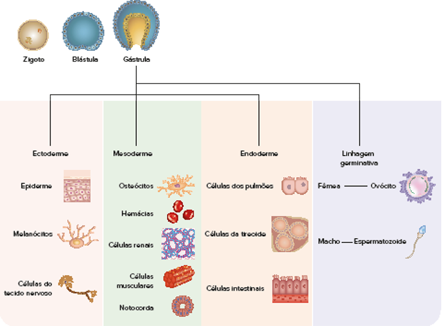
Representação esquemática da variedade de células derivadas de cada folheto embrionário.
Cavidade corporal ou celoma
A maioria dos animais triblásticos é dotada de cavidade corporal, isto é, um espaço preenchido por líquido ou ar localizado entre a cavidade digestória e a parede corporal externa. O celoma, como essa cavidade também é conhecida,
protege o organismo contra choques mecânicos, atua como meio de circulação de substâncias e, em alguns casos, armazena gametas. Além disso, garante a sustentação corporal ao constituir o esqueleto hidrostático. O celoma
só é considerado “verdadeiro” quando revestido integralmente por um tecido derivado da mesoderme. Sendo assim, os animais triblásticos podem ser diferenciados em: acelomados, blastocelomados e celomados. Os primeiros animais
a apresentar o desenvolvimento de mesoderme foram os platelmintos. Entretanto, eles não chegaram a desenvolver a cavidade corpórea. O corpo desses animais é maciço e preenchido por tecidos derivados do mesoderma. Por esse motivo,
são classificados como acelomados.
Os nematelmintos são animais de corpo vermiforme, os primeiros a formar cavidade corpórea. No entanto, a cavidade é parcialmente revestida por mesoderma. Assim, são classificados como animais blastocelomados (ou pseudocelomados).
Apesar de não ser considerada um celoma verdadeiro, essa cavidade é completamente funcional, e o espaço apresenta resquícios da blastocele. Os demais filos animais desenvolveram a cavidade celomática verdadeira, isto é,
revestida completamente por tecidos derivados do mesoderma que circundam toda a cavidade, conectam-se e formam estruturas que sustentam os órgãos internos. São os animais celomados
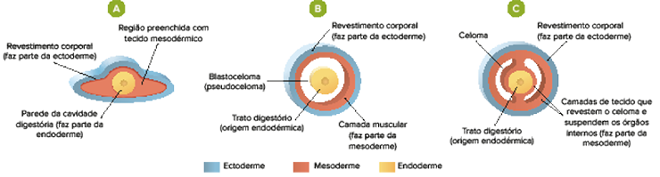
Representação esquemática da classificação dos animais triblásticos de acordo com a organização do corpo em relação à cavidade corporal. A. Acelomado; B. Blastocelomado; C. Celomado
Origem do celoma
Nos celomados, a cavidade pode ser originada de duas formas: por esquizocelia (do grego esquizo e celia, que significam, respectivamente, “fender” e “cavidade”) ou por enterocelia (do grego enteron e celia, que significam, respectivamente,
“intestino” e “cavidade”). A esquizocelia ocorre em todos os animais protostômios. Nesse caso, o celoma origina-se de um maciço celular que surge próximo ao blastóporo, que se dispõe entre a endoderme e a ectoderme. Posteriormente,
o tecido formado passa por diferenciação, que resulta na delimitação de um espaço preenchido por fluido. A enterocelia, por sua vez, comum a todos os animais deuterostômios, tem o celoma originado a partir de modificações
sofridas por uma parte da parede do intestino primitivo, ou seja, da endoderme, formando bolsas mesodérmicas que se distribuem entre a cavidade digestória em formação e a ectoderme.
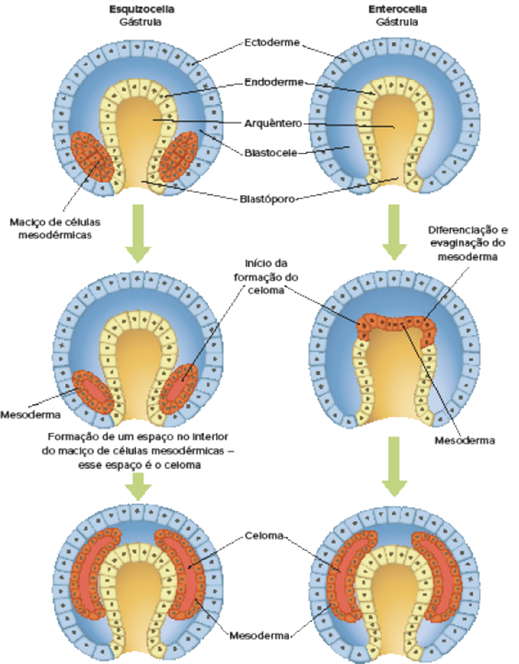
REECE, J. B. et al. Biologia de Campbell. 10. ed. Porto Alegre: Artmed, 2015. Representação esquemática da formação do celoma. A esquizocelia ocorre em todos os animais protostômios e a enterocelia, nos deuterostômios.
Questão resolvida
1
Ufla-MG O esquema a seguir representa a diferenciação do tecido mesodérmico em animais triploblásticos
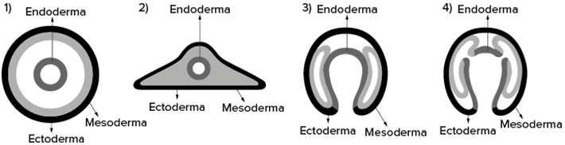
Os animais representados pelos esquemas 1, 2 e 4 são classificados, respectivamente, como:
pseudocelomados, acelomados e enterocelomados.
acelomados, pseudocelomados e enterocelomados.
pseudocelomados, enterocelomados e esquizocelomados.
pseudocelomados, enterocelomados e esquizocelomados.
Resolução:
Alternativa: A Com base nas figuras 1 e 2, é possível notar a presença e a ausência, respectivamente, de uma cavidade, além da cavidade digestória. Sendo assim, é possível identificar na imagem 1 que a cavidade extra não é
completamente revestida por mesoderma; por essa razão, o animal que apresenta tal organização é classificado como blastocelomado (pseudocelomado). Já o animal representado na imagem 2, devido à ausência do celoma e à presença
dos três folhetos embrionários, é classificado como acelomado. Por fim, na imagem 4, uma vez que o celoma deriva da evaginação do mesoderma, pode-se classificá-lo com enterocelomado.
Plano corporal e simetria
Os animais distinguem-se uns dos outros pela grande variedade estrutural que apresentam. Além disso, o tipo de “plano corporal” pode ser usado como critério para separá-los em grandes grupos. Há animais que apresentam um arranjo
regular das estruturas em relação aos eixos do corpo: dorsoventral e anteroposterior. Ademais, podem ser classificados como simétricos, caso seja possível dividir os animais em duas ou mais partes semelhantes e espelhadas,
ou assimétricos, no caso de animais em que não se distingue nenhum eixo corpóreo, sendo, portanto, desprovidos de simetria. Estes são representados especificamente pelos poríferos. Enquanto alguns metazoários apresentam
ao longo de toda a vida uma simetria característica, outros podem ter na fase adulta uma simetria diferente da observada no embrião ou no estágio larval, quando presente. A simetria observada nos estágios iniciais do desenvolvimento
é primária. Quando alterada no adulto, é considerada secundária. Os tipos de simetria observados nos animais são a radial e a bilateral. A simetria radial ou radiada é comum em organismos que apresentam vida séssil – fixos
ao substrato – e estrutura corporal cilíndrica. Além disso, podem apresentar variações quanto ao número de planos de corte, e a simetria pode ser birradial, quadrirradial ou pentarradial.
Metameria
Em alguns animais bilatérios, o desenvolvimento embrionário organiza-se em estruturas que se repetem por todo o eixo anteroposterior, o que possibilita a formação de metâmeros ou segmentos. Os principais filos dotados de segmentação
são anelídeos, artrópodes e cordados.
Filogenia dos metazoários
As características apresentadas neste capítulo são utilizadas para o estabelecimento de relações de parentesco entre os diferentes filos que compõem o reino Animalia e são apresentadas sob a forma de um cladograma.
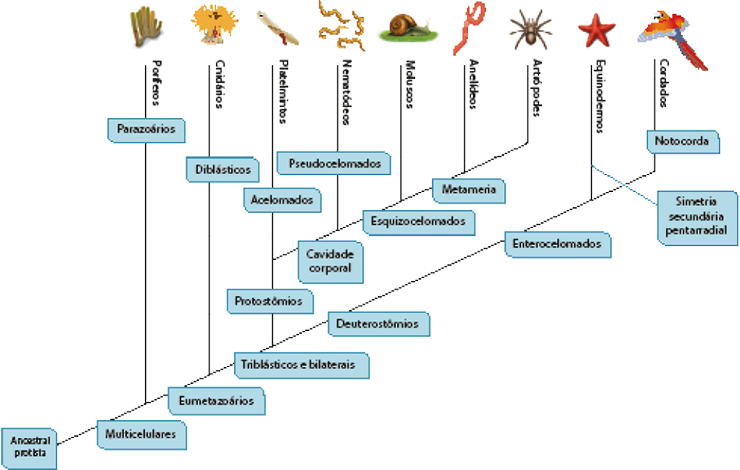
Cladograma que representa os filos do reino Animalia e as características que estabelecem relações de parentesco.
Na abertura da unidade, aparecem os termos vertebrados e invertebrados. No entanto, análises filogenéticas demonstraram que os animais que costumam ser agrupados como invertebrados derivam de ancestrais distintos – não constituem,
portanto, um grupo monofilético. Contudo, o advento da biologia molecular e a ampliação de suas aplicações têm exigido significativas reorganizações dos grupos animais, pois têm revelado novas proximidades entre filos
até então considerados distantes ou pouco relacionados. Nas propostas de classificação recentes, os protostômios se subdividem em dois grupos: Ecdysozoa e Lophotrocozoa. Além disso, o filo Arthropoda tem parentesco mais
próximo com os nematódeos do que com o filo Annelida, como se supunha anteriormente.
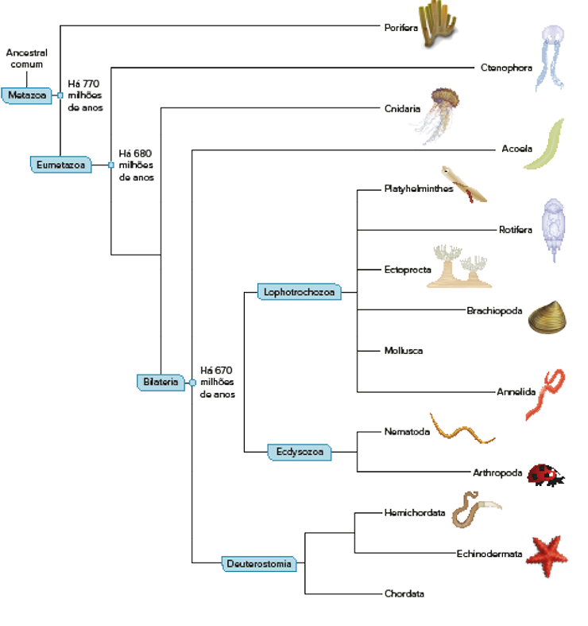
Cladograma do reino Animal com base na análise comparativa de DNA.
REECE, J. B. et al. Biologia de Campbell. 10. ed. Porto Alegre: Artmed, 2015.
Aplicando conhecimentos
1
Diferencie um animal diblástico de um triblástico e exemplifique cada um.
2
que é celoma? Dê dois exemplos de animais celomados.
3
Observe a figura a seguir:
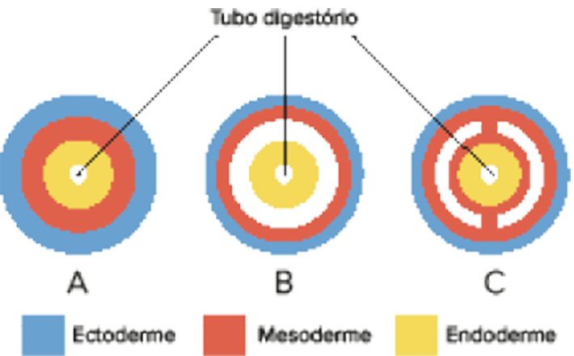
Em relação ao celoma, responda:
Indique qual das figuras corresponde a um animal acelomado, a um blastocelomado e a um celomado.
ê um exemplo de animal que apresente a estrutura de cada item apresentado na ilustração.
CONSOLIDANDO SABERES
1
UEL-PR 2020 Além da simetria, os tecidos embrionários e a origem das cavidades corporais podem auxiliar na compreensão das principais relações evolutivas existentes entre os diferentes grupos animais. Com base nos conhecimentos
sobre as tendências evolutivas nos grupos animais, assinale a alternativa correta.
Uma das principais vantagens da organização segmentada da musculatura, chamada de metameria, é a de conferir aos animais que a possuem uma versatilidade muito grande na movimentação cor
Na maioria dos animais que compõem o grupo dos poríferos, o celoma, tecido de origem endodérmica, reveste a superfície corporal, conferindo uma adaptação evolutiva em ambientes com pouca disponibilidade de água.
Com base na presença e no tipo de cavidade corporal, os animais diblásticos podem ser classificados em protostômios, por possuírem sistema digestório completo, e deuterostômios, nos quais o mesmo sistema é incompleto.
As esponjas são animais filtradores que captam partículas alimentares da água por meio das células flageladas que as conduzem para a boca, indicando, em termos evolutivos, que esses animais possuem tecido
2
Fuvest-SP Considere a árvore filogenética abaixo
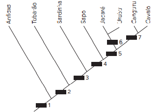
Essa árvore representa a simplificação de uma das hipóteses para as relações evolutivas entre os grupos a que pertencem os animais exemplificados. Os retângulos correspondem a uma ou mais características que são compartilhadas
pelos grupos representados acima de cada um deles na árvore e que não estão presentes nos grupos abaixo deles. A presença de notocorda, de tubo nervoso dorsal, de vértebras e de ovo amniótico corresponde, respectivamente, aos
retângulos
1, 2, 3 e 4
1, 1, 2 e 5.
1, 1, 3 e 6.
1, 2, 2 e 7
2, 2, 2 e 5.
3
UEM-PR Sobre todos os organismos do Reino Animal, é correto afirmar que
01.apresentam estágio de gástrula no desenvolvimento embrionário. 02.são multicelulares, eucariontes e têm nutrição heterotrófica 04.apresentam células dotadas de núcleo, citoesqueleto e organelas citoplasmáticas membranosas. 08.têm sistema nervoso, três folhetos germinativos e são móveis. 16.possuem blastóporo e uma cavidade corporal revestida por mesoderma.
Soma:
4
Fuvest-SP 2017 Considere anelídeos, artrópodes e cordados quanto à embriogênese e à metameria (divisão do corpo em uma série de segmentos que se repetem – os metâmeros).
No desenvolvimento do tubo digestório, a abertura originada pelo blastóporo é característica que permite classificar anelídeos, artrópodes e cordados em um mesmo grupo? Justifique sua resposta.
Nos anelídeos, os metâmeros podem mudar de forma ao longo do corpo. Isso ocorre também nos artrópodes adultos? Justifique sua resposta.
5
Unicamp-SP O estudo do desenvolvimento embrionário é importante para se entender a evolução dos animais. Observe as imagens a seguir.
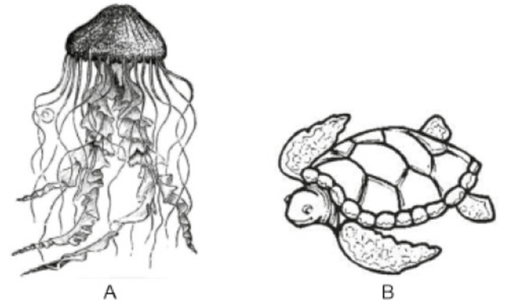
Assinale a alternativa correta.
O animal A apresenta simetria bilateral e é celomado.
O animal B apresenta simetria radial e é celomado.
O animal A apresenta simetria radial e é acelomado.
O animal B apresenta simetria bilateral e é acelomado.
6
UEM-PR Durante o processo evolutivo dos animais, algumas estratégias de sobrevivência podem ser destacadas, tais como: a multicelularidade, a formação de tecidos corporais especializados, o desenvolvimento da simetria
corporal, a cefalização, o desenvolvimento da cavidade e da segmentação corporal e o desenvolvimento de sistemas esqueléticos. Com relação a estas características e aos conhecimentos de Zoologia, assinale o que for correto.
01.Todos os animais com metameria apresentam cavidade corporal e simetria bilateral. 02.Todos os animais com simetria bilateral apresentam metameria e três folhetos germinativos. 04.Todos os animais com cavidade corporal apresentam três folhetos germinativos e metameria. 08.Todos os animais com sistema digestório completo apresentam simetria bilateral e metameria. 16.Todos os animais com três folhetos germinativos apresentam sistema digestório completo e cavidade corporal.
Soma:
7
PUC-Rio Observe o cladograma abaixo
A que características correspondem os algarismos I, II, III, IV, V, VI e VII, respectivamente, em relação aos táxons assinalados acima do cladograma?
Celoma, blastóporo origina a boca, blastóporo origina o ânus, vértebras, quatro pernas, pelos, exoesqueleto quitinoso.
Celoma, blastóporo origina a boca, blastóporo origina o ânus, notocorda, quatro pernas, pelos, seis pernas.
Simetria radial, blastóporo origina a boca, blastóporo origina o ânus, notocorda, quatro pernas, pelos, exoesqueleto quitinoso.
Celoma, blastóporo origina o ânus, blastóporo origina a boca, vértebras, quatro pernas, pelos, exoesqueleto quitinoso.
Celoma, blastóporo origina a boca, blastóporo origina o ânus, notocorda, quatro pernas, pelos, exoesqueleto de quitina.